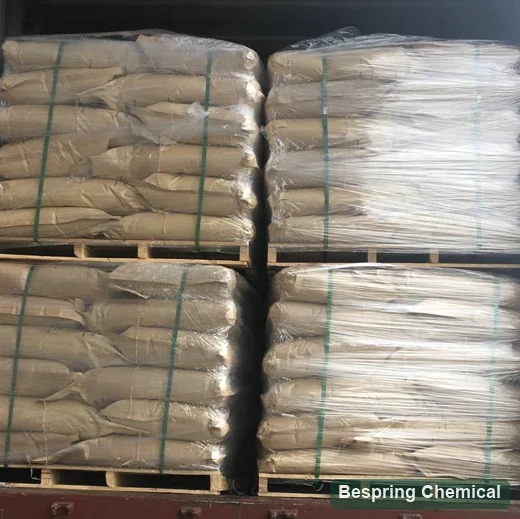

混合開発
制御されたミキサーのエネルギーの下の吸水性、開発の時間、安定性、抵抗および過混合の許容を追跡して下さい。
アニオン食品乳化剤・E472e / INS 472e

製品イメージ・注文時にグレード・パッケージの確認
お問い合わせは、必要なグレードとフォーム、包装および数量を指定します。該当する製品仕様および利用可能なドキュメントについては、Bespringにお問い合わせください。
混合のアイデンティティ単一の分子方式無し
ソースレビュー脂肪/オイルの起源を確認して下さい
トライアル比較同じ小麦粉+プロセス
レビューの使用カテゴリー別ルール
製品のアイデンティティとグレードの選択
DATEM はモノラルおよび diglycerides の diacetyl の tartaric の酸エステルのための立場です。 2009 JECFAモノグラフ 食用油脂由来の脂肪酸と、モノアセチル酒石酸およびジアセチル酒石酸からなる、グリセリンの混合エステルと定義しています。これは混合物であり、単一の分子式、分子量または特定の水和物で表される物質ではありません。原料と反応条件によって成分分布が変化します。
JECFAは、このアイデンティティのCAS 308068-42-0および100085-39-0をリストします。CASまたはE472eだけでは、同等のベーカリーグレードを指定します。オファーがDATEM自体であるか、またはキャリア、アンチケーキング剤または他の乳化剤と処方された調製であるかを確認し、その成分宣言およびDATEM含有量を要求してください。食品グレードは、他のグレードの独立して確立する必要があります。
生地インターフェイスを強化する
DATEMは、一般的に、アニオン性生地増強乳化剤としてスクリーニングされます。その実用的な値は、一般的な「乳化」主張ではなく、小麦粉タンパク質、澱粉、脂質、水、混合エネルギーおよび発酵間の相互作用によって決定されます。
制御されたミキサーのエネルギーの下の吸水性、開発の時間、安定性、抵抗および過混合の許容を追跡して下さい。
生地の伸縮性、抵抗、発酵の拡張、崩壊を、より多くの強さを想定するよりもむしろ測定することは常により良いです。
オーブンのばね、loafの容積、サイドウォールの形、壊れ目/shredおよびパン粉細胞の配分を比較して下さい。
意図した保管期間に残された固着、レジリエンス、咀嚼、乾燥性をチェックしてください。これらは、固定棚寿命の利益ではなく、試験結果です。
制御ベークと比較して下さい
同一ロットの小麦粉を使用し、たんぱく質、損傷でんぷん、吸水率、アスコルビン酸、酵素、モノ・ジグリセリドおよびその他の改良剤を記録してください。
未処理のコントロール、現在のベンチマーク、およびグレードと許可された使用に適した候補レベルを含みます。 試験レベルが合計の準備やDATEMコンテンツを参照するか、小麦粉の質量または完成食品の質量を参照するかどうかを記録します。
正常で、延長混合、証拠の時間および温度、ライン残りおよびプロセス中断をテストして下さい。
使用可能な、生地の処理、証拠の高さ、特定の容積、パン粉のイメージ、質および棚の生命のfarinograph/mixデータを記録して下さい。
性能の境界: DATEMは、適切なシステムでガスの保持と生地の許容をサポートすることができますが、このページでは、ローフボリューム、収量、または保存性の保証はありません。
参照の指定およびバッチ証拠
2009年 JECFA の値は独立したアイデンティティ/純度の参照で、Bespring TDS や COA のバッチではありません。
小さいスクリーンでは、価値およびバイヤーの条件を読むためにテーブルを細くして下さい。
スワイプするか、キーボードを使ってすべての列をご覧ください
| フィールド | JECFA リファレンス | バイヤー制御 |
|---|---|---|
| 酸価(mg KOH/g) | 40–130 | 方法およびより堅い適用等級のターゲット |
| 総酢酸 | 加水分解の後の8–32% | 方法、バッチ値、感覚/匂いチェック |
| 総タール酸 | 満足の後の10–40%は絶食します | 方法および等級の一貫性 |
| 合計 / 無料グリセロール | 11–28% / ≤2.0% | 合計: saponification の後の; 放して下さい: 水性抽出。 方法およびバッチ結果を確認して下さい。 |
| 硫酸塩灰 | ≤0.5% | 800±25°C方法および結果 |
| リード | ≤2 mg/kg | 現在の宛先/顧客制限と報告方法 |
| 脂肪酸ソース/プロファイル | アイデンティティテスト;食用脂肪/オイル | 原種・油・水素化・ヨウ素値・クレーム文書 |
| 物理/応用分野 | INS IDで固定されていない | フォーム、粒子分布、分散性、熱的行動および焼くベンチマーク |
この表には、商用保証値や完全適合性評価ではなく、選択したJECFA参照フィールドが含まれています。 提供されるグレードの仕様と試験方法に同意します。 バッチCOAは、合意された仕様に対してバッチを報告します。 仕様またはアプリケーション試験を置き換えません。
酸価は、試料1グラム中の酸を中和するために必要な水酸化カリウムの量を表します。説明は次を参照： JECFA分析方法. それはパン屋の性能の評価ではないです。 TDS、SDS、代表者およびバッチCOA、原料/ソース宣言およびその規模の必要な証明書を要求して下さい。実際の提供の物理的形態、構成、パックのサイズ、MOQ、貯蔵、棚の生命および配達条件を確かめて下さい。
引用した2009年の混合物定義、二つのCAS登録情報、物質同定、純度および試験方法。
2009年モノグラフのレビューこのデータベースを使用して、宛先関連食品カテゴリ、制限、メモをチェックします。 該当する国の規則を別々に確認します。
INS 472eの規定のレビュー米国の食糧使用のため、 21 CFR 184.1101 成分を定義し、アイデンティティ/純度、関数、食品カテゴリ、および良好な製造プラクティス条件を指定します。E/INS番号は、すべての食品や市場に対する許可ではありません。
機構とラベルで選ぶ
生地の増強およびガス細胞の安定性のために一般に選ばれるアニオンの乳化剤。
乳酸エステルは、異なる化学と性能を持っています。強度、パン粉、許可された使用とラベル宣言を比較します。
比較する モノラル・デグリセリド(E471) および 蒸留モノグリセリドグレード 組成物と必要な生地やパン粉の応答によって。それらは等しくないDATEMの代替品。
酵素は、触媒作用を発揮し、基質/加工に依存します。小麦粉の分散性、耐容性、保存性、ラベル戦略を比較します。
酸/基のガス解放の設計のためのむしろイースト ダフの増強、見直して下さい パン屋はリン酸ガイドを去ります.
ソース・ツー・ライン承認
INS 472e、生産の定義、食用脂肪/油の起源および必須の宣言を確認して下さい。
アルカリ酸値、タル酸/酢酸、グリセロール、脂肪酸プロファイル、灰、鉛および方法。
液体/ペースト/固体または粉末形態、任意の場合のキャリア、粒子分布および分散プロセスを承認します。
マッチした小麦粉とプロセスを使用して、生地のレオロジー、許容、ボリューム、パン粉、テクスチャを比較します。
ドージング、プレミックスの均等性、ライン停止、証拠の変化、棚の生命およびreworkを検証して下さい。
COA、サンプリング、匂い、フォーム、パッケージ、ストレージおよび変更通知を承認します。
歴史ある物流の参考文献

歴史的兵站学の実例;それはDATEMの等級、袋の重量または最終的なパッキングの整理を確立しません。承諾の包装、はさみ金、パレット構成および提供の貨物条件。等級別にされた貯蔵の指示に続き、プロダクト文書からの開始の後で貯蔵および処理を確かめて下さい。
バイヤーの質問
DATEMは、モノ・ジグリセリドのジアセチル酒石酸エステルを意味し、食品用乳化剤として使用されるグリセリンエステルの混合物です。E472eとINS 472eは添加物を識別しますが、単一の組成、物理的形態または製パン用グレードを指定するものではありません。
いいえ。 エステル組成、脂肪/油源、物理的形態および成分の宣言を比較します。 同じ小麦粉、レシピ、混合、校正およびベーキングプロセスで候補を評価します。
保証された関係はすべての等級および生地に適用しません。 制御された試験を使用して、拡張性、加工性およびパン粉の質感とボリュームを評価します。 該当する許可された使用中の試験レベルを選択します。
いいえ。引用された2009モノグラフから選択された値です。 提供されるグレードの仕様、完全な方法および実際のバッチのためのCOAを取得します。 酸値は、組成関連の分析測定であり、直接性能保証ではありません。
アイデンティティは、食用脂肪や油から脂肪酸を許容します。それは特定の植物や動物ソースを確立しません。 原産宣言を要求し、任意の必要な菜食主義者、ハラール、コーシャ、またはアレルゲン 提供されるグレードおよび関連生産現場のエビデンス。
等しい置換を想定しないでください。化学およびアプリケーション動作は異なります。許可されている使用、組成およびラベルの要件を確認し、実際の食品およびプロセスで再構成および検証します。
食品規格、アプリケーション、小麦粉およびプロセス、ベンチマークおよび性能目標、制限の起源、構成および形態、量、包装、目的地および配送条件を提供します。 リストは、TDS、SDS、COA、および宣言が必要なので、可用性と範囲を確認することができます。
2026-10-04 · テクニカルリファレンス: FAO/WHO JECFA と US eCFR; コードックス 参照リンク 使用レビューのために提供しました。
構成および焼結させた調達
小麦粉、改良剤システム、および制御されたベークのターゲットを共有すれば、ソースは意味的にスクリーニングすることができます。
あなたの等級および宛先市場を私達に知らせて下さい従って私達はあなたの順序のためにどの文書が利用できるか確認してもいいです。
外部参照は、バッチ証明書または Bespring 製品仕様ではありません。